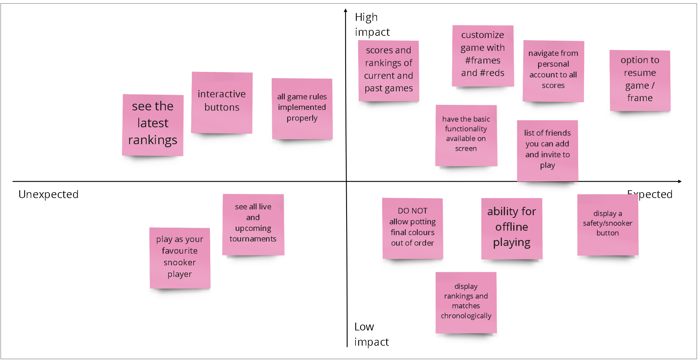
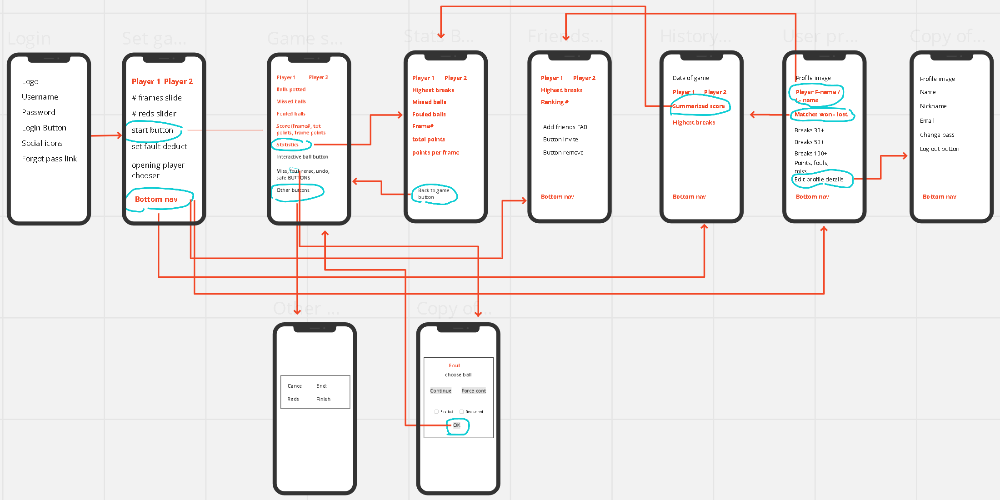

Snooker Score Keeper
Mobile / UX / UI
intro
The target of this project was to design a solution for a snooker score keeping app, ready for production.
Snooker board UX is the first professional project I've completed since completing the UX Nanodegree.
Objective: Create a simple score keeper for snooker players
Role: UX research and design
Duration: 1 month
Tools used: Adobe XD / Illustrator, Figma, Miro, Behance
Final product showcase: Mobile design ready for engineering hand-off
Brief
The brief was given by the client: they wanted to create an app that holds the score of a snooker match as per the official rules and required a simple but attractive design. As a fan of this sport, I empathised with the client and understood his expectations; by the end of the design process, I had a lot of input from his side and implemented/adapted a lot of features that worked best for the app.
solution
Target audience: Snooker fans and amateur players who want to use this app to keep track of their score when playing with friends.
To encourage players to make use of the app and observe their performance over time, a statistics page is implemented: they can view the results from each match they played, in chronological order.
feature ideation and prioritization
I interviewed three potential users from the target audience to determine what factors influence their decision of digitally keeping track of their score. Some of the main decision factors were:- able tochoose number of frames, reds on the table and foul value
- play in multiplayer mode (minimum 2)
- able to add friends & invite to play
- can keep track of performance via a statistics page, while also seeing friends’ rankings
- able to implement same rules as in a live game (can undo, rerack, remove and concede game)
- in case of fault, user will have to retake shot, continue or choose free ball shot
Based on the notes taken during the interviews, I built the feature prioritization diagram:

With an idea of the features the app may benefit (apart from the ones already set out), I used an ideation method to begin to understand what would help in building the minimal viable product
wireframing
The mock design presents the users with a setup screen where they customize their game by choosing the number of frames to play, the number of red balls and the fault value.
As soon as the players decide to end the current frame or the entire match, their progress can be seen on a separate screen.
high-fidelity prototyping
The app has is due to be launched on the App Store.